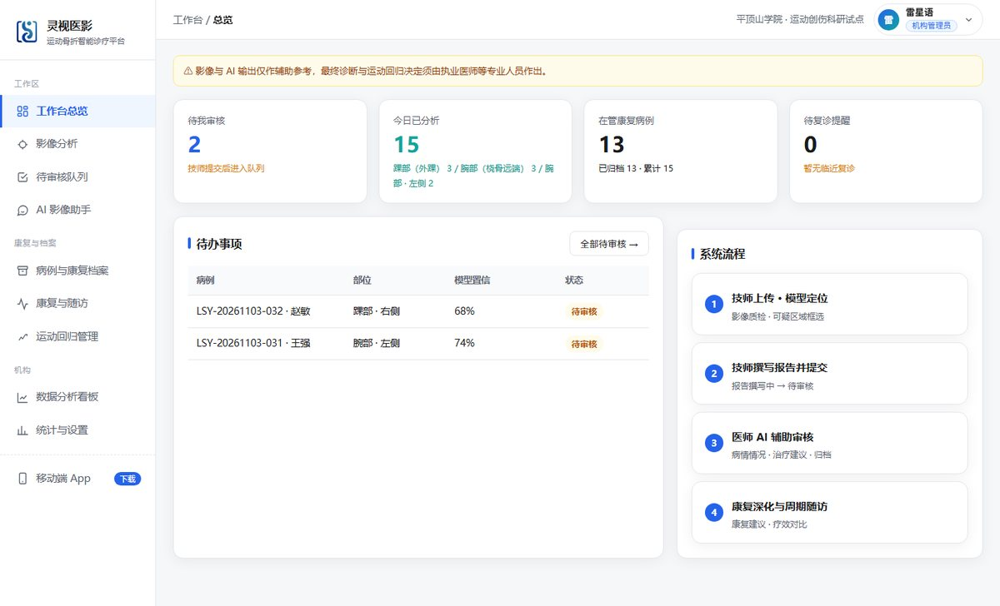
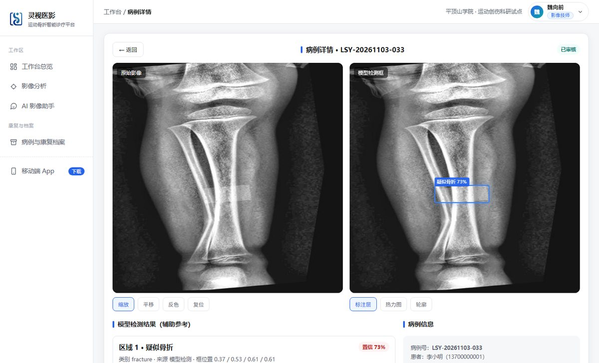
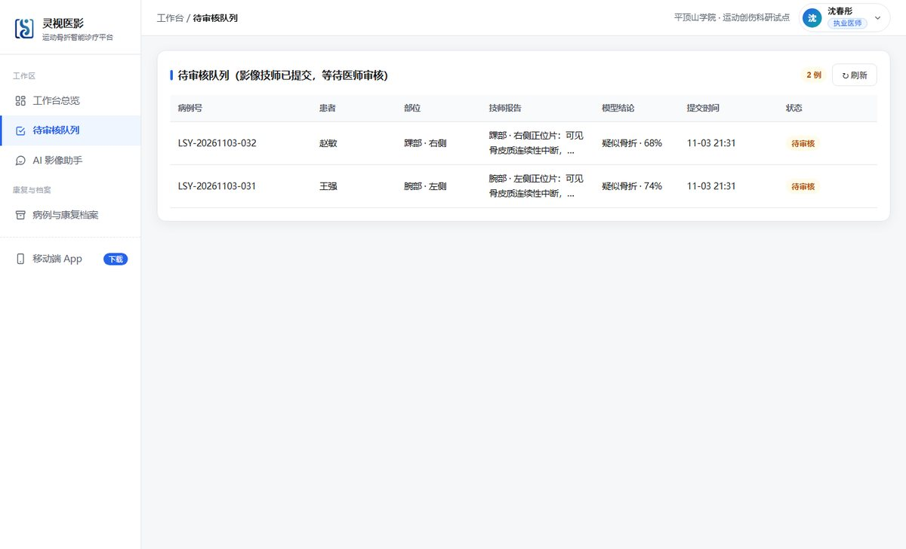
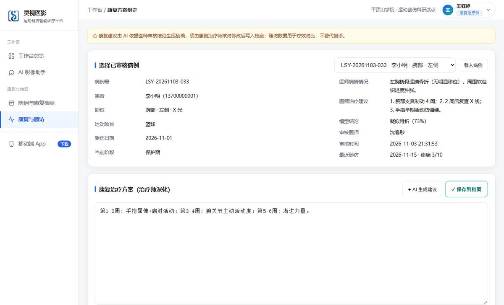
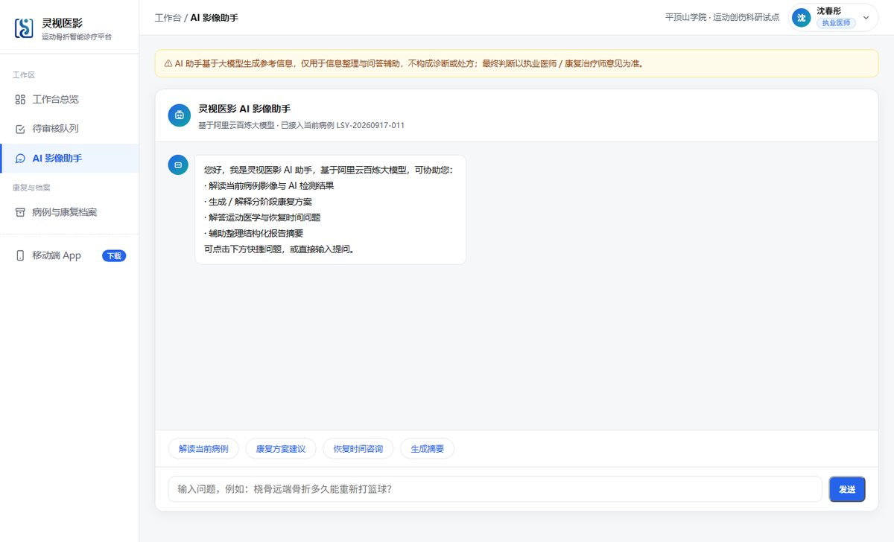
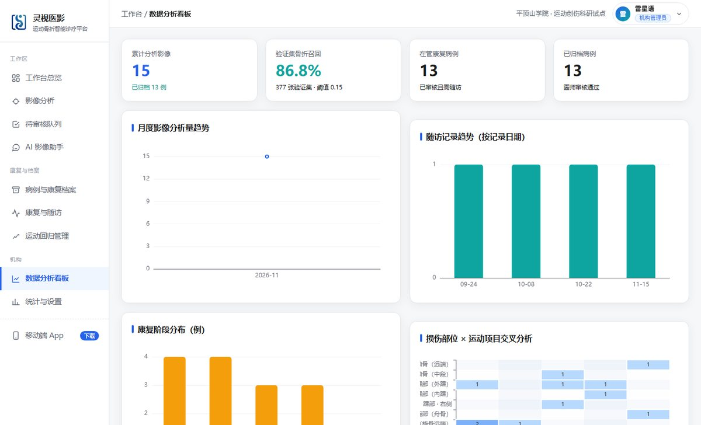

医疗机构端
面向骨科、放射科、急诊、运动医学与基层机构的专业工作台。
- 影像预处理与质量检查
- 疑似骨折区域可视化与置信度
- 结构化报告与复核全程留痕
一套核心系统连接医疗机构、体育机构与个人康复三个端口，覆盖影像识别、复核报告、康复决策到运动回归的完整工作流
围绕运动人员受伤后的完整服务流程，连接影像诊断、康复训练与运动回归
面向骨科、放射科、急诊、运动医学与基层机构的专业工作台。
面向高校、俱乐部、青训与赛事保障，经授权查看队员康复情况。
面向进入康复阶段的运动人员，移动端承载随访与自我管理。
覆盖影像识别、复核报告、康复决策到运动回归的完整工作流，以下为系统真实界面

待审核、今日已分析、在管康复、待复诊等关键指标一屏掌握，待办事项与系统流程引导清晰有序。

支持影像上传与质量检查，模型自动标注疑似骨折区域并给出置信度，辅助技师快速初筛。

技师核对模型结果后撰写检查报告并提交，病例进入待审核队列；执业医师可调 AI 生成病情与治疗建议初稿，核对修改后确认归档，全程留痕。

康复治疗师在医师结论上深化分阶段训练计划，标记禁忌动作与复评节点；随访记录疼痛、关节活动度与训练完成度，趋势自动汇总。

接入大语言模型，支持影像解读、康复建议、恢复时间咨询与病例摘要生成，回答均标注辅助参考。

累计病例、已归档、在管康复、随访趋势、康复阶段分布与部位 × 运动项目交叉热力图全部来自真实数据，支持科研数据导出。